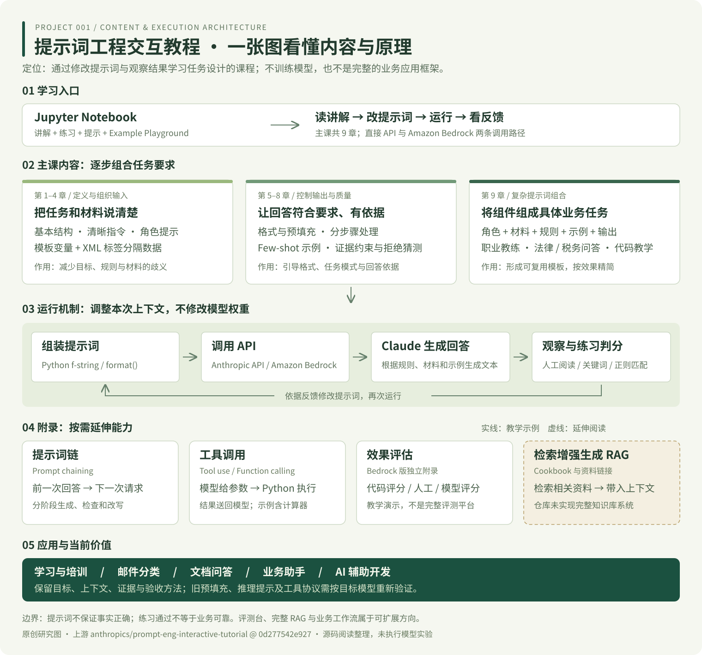

工具调用的完整回路
模型输出函数名和参数 → Python 解析 → 执行计算器 → 把计算结果送回模型 → 模型组织回答。
原教程用文本标签和停止序列协调调用。落地时应按目标模型接口适配工具协议。
一套通过「读讲解 → 改提示词 → 运行 → 看反馈」学习 AI 任务设计的交互课程。理解技术为什么有效，比记住一段万能提示词更重要。
从基本结构到复杂任务
Anthropic API / Amazon Bedrock
讲解、练习、提示与实验区
它教你设计任务和验证结果。 提示词模板是教学材料；编程只是应用场景之一。它没有交付完整的开发代理、知识库或业务后台。
从学习入口到主课技术，再到模型调用与反馈循环。附录能力按需使用；RAG 虚线框表示延伸阅读入口。

选择一项，查看解释、例子与边界。
提示词工程改变的是本次请求的上下文，不会修改模型权重。基础代码把提示词交给 Claude，再把文本结果交给人或程序检查。
任务规则 + 材料
示例 + 输出要求
get_completion()
→ messages.create()
人工观察
关键词 / 正则判分
调整提示词
重新运行练习
模型输出函数名和参数 → Python 解析 → 执行计算器 → 把计算结果送回模型 → 模型组织回答。
原教程用文本标签和停止序列协调调用。落地时应按目标模型接口适配工具协议。
部分练习仅检查输出是否包含指定关键词或标签。它帮助学习者获得即时反馈，不能替代真实数据上的准确率评估。
Bedrock 版另有代码评分、人工评分与模型评分教学。
依据：基础调用与判分 · 工具调用示例 · Bedrock 评估附录
选择场景，再切换提示词组成部分，观察任务要求如何变得具体。下方为本研究页原创示例；文字变化不代表模型效果已得到验证。
仅组合示例文本，无 API 请求或密钥配置。
模型不能凭空知道你的业务要求。清晰的任务定义、代表性示例和真实测试集，仍是可靠结果的基础。
教程默认 Claude 3 Haiku，属于较早的实践。新模型对消息格式、预填充和推理控制的支持不同，不能只替换模型名称。
适用性判断依据：教程模型配置 · 当前官方提示词指南 · 扩展思考文档。学习优先级与扩展路线为本研究页分析。
模板版本 + 真实测试集 + 批量评分，记录准确率、格式合格率、耗时和成本。
建议优先：先知道怎样算更好补充文档解析、检索、重排与引用校验，把相关资料送入上下文。
关键技术：RAG接入业务 API，增加参数校验、权限控制和错误处理，由程序执行具体操作。
关键技术：Tool use + 编排把课程做成中文练习界面，适配不同模型，用同一任务集比较表现。
关键技术：接口适配 + 统一评估阅读仓库目录、主要 Notebook 源码及官方文档，提炼为中文说明。未调用付费模型 API，未复现课程中的模型输出。本页技术数是整理口径，不等同于上游章节数。
上游版本：0d277542e927
版本提交日期：2024-04-08 · 本次核对：2026-09-09
每项技术提供固定版本的源码链接。当前模型适用性另引用官方在线文档，后续可能变化。
根目录未发现统一许可证；AmazonBedrock/LICENSE 标明 MIT No Attribution，不能据此推定整个仓库均采用相同许可。本页以原创摘要和来源链接为主。